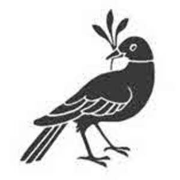

Trade Mark Journal No.2025/035 29 August 2025
UK00004251008 18 August 2025 (3,4,9,11,14,16,18,21,23,24,25,27,28)
Mark 1
Mark 2

- Class 3
- Scented oils; scented wood; scented room sprays; scented fabric sprays; reed diffusers; air fragrance reed diffusers; toiletries; perfumes and fragrances; skincare preparations; body cleaning and beauty care preparations; beauty lotions; soaps; non-medicated oils; bath oils; perfume oils; essential oils and aromatic extracts; shower gels; shampoos.
- Class 4
- Candles; scented candles; perfumed candles; fragranced candles; fragrant wax for use in wax warmers; decorative candles; tea lights; candles in tins; Christmas tree candles.
- Class 9
- Covers for security cameras; camera casings; phone cases; mobile phone cases; glasses cases; decorative magnets.
- Class 11
- Lampshades; radiator covers; fitted fabric covers for hot water bottles; electric candles; scented electric candles; electric warmers to melt wax; electric lighting.
- Class 14
- Keyrings; keyrings of precious metal; jewellery; watches; clocks.
- Class 16
- Books; stationery; cards; postcards; greetings cards; envelopes; gift books; notepads; notebooks; sketchbooks; journals; pen holders; storage box of cardboard; paper planners; diaries; paper organisers; tablecloths and table runners of paper; paper towels; paper table napkins; paper place mats; desk trays; coasters of paper and cardboard; gift bags; gift boxes of paper and cardboard; scented paper drawer liners; shelf papers; posters; prints; printed posters; printed cards; paper wine gift bags; wine boxes of cardboard; printed wine bottle labels; collapsible cardboard boxes; knitting patterns; paper shopping bags; plastic shopping bags.
- Class 18
- Umbrellas; wash bags for carrying toiletries; bags; tote bags.
- Class 21
- Place mats, not of paper or textile; storage tins; biscuit tins; cake tins; storage jars; trays; serving trays; coasters; trivets; serving boards; paper cups; plastic cups; paper plates; plastic plates; glass holders for candles; oven gloves; oven mitts; pot holders; cutting boards; holders for cutting boards; dish cloths; bottles; wine strainers; wine buckets; wine pourers; wine openers; wine glasses; ceramics for household and kitchen use; ceramic tableware; cups; mugs; tea cups; saucers; travel mugs; water bottles; demitasse sets comprised of cups and saucers.
- Class 23
- Knitting yarns of wool; hand knitting wools; hand knitting yarns.
- Class 24
- Fabrics; woollen fabric; textiles; textile piece goods; printed textile piece goods; linens; kitchen linen; bath linen; table linen; household linens; tablecloths of textile and fabric; dish cloths of textile for drying; textile coasters; table runners of textile and fabric; towels; printed towels of textile; kitchen towels; bathroom towels; tea towels; face towels; hand towels; textile napkins; textile serviettes; place mats of textile and fabric; bed linen and blankets; woollen blankets; cotton blankets; cashmere blankets; blanket throws; picnic blankets; cushion covers; pillow cases; laminated fabrics; textile handkerchiefs; travelling rugs.
- Class 25
- Aprons; scarves; cashmere scarves; silk scarves; pashminas; dresses; tops; t-shirts; jumpers; hoodies; sweatshirts; polo shirts; slippers; socks; sleepwear; nightdresses; pyjamas; baby sleepsuits; baby bodysuits; baby vests.
- Class 27
- Wallpaper; textile lined wallpaper; rugs; carpets.
- Class 28
- Games, toys and playthings; playing cards; puzzles; jigsaws; Christmas tree decorations; festive decorations; artificial Christmas trees; ornaments for Christmas trees.
The William Morris Society
Representative: Shepherd and Wedderburn LLP